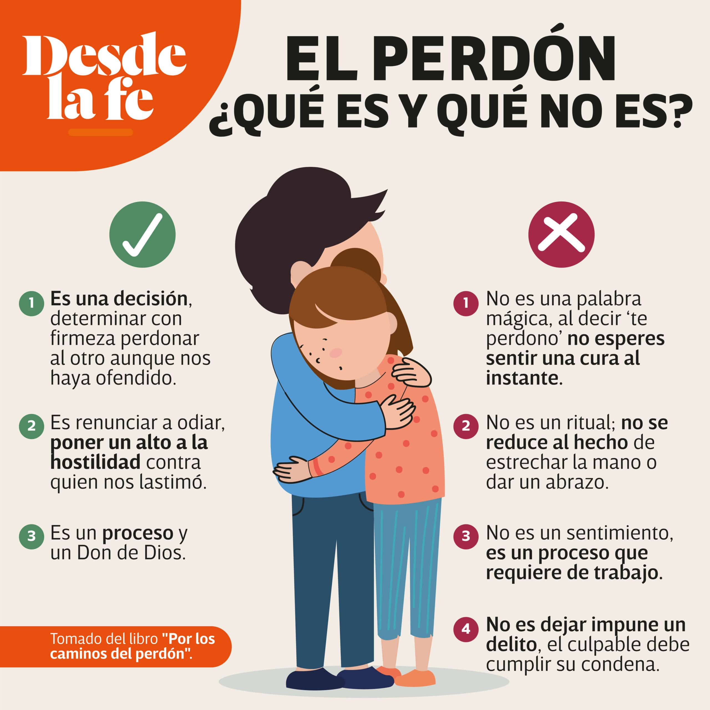

Para empezar,debemos tener en cuenta cual es la definicon de "Perdón",Y lo podemos definir dasicamente en : Recordar sin dolor. Perdónar no quiere decir olvidar o hacer de cuenta que nunca paso lo que paso,por que para eso, se tendria que formatear la memoria,o borrar de la memoria dicho acontecimiento que necesite de Perdón, Pero sabemos que eso no se puedem hacer ,no se puede borrar la memoria de una persona,o hacer que ella se olvide de algo que le haya causado dolor,por que el cerebro se inclina mas a recordar hechos traumantes ,y eso lo hace mas dificíl aun. Pero si podemos a travez del perdón,que recordemos algo ,sin sentir dolor ,y mucho mas alla de sentir dolor, el perdón tiene el poder de cambiar nuestro deseo de venganza ,y a travez del amor del Padre,trae a nosotros un espiritu de amor y entendimiento que,Si Dios nos perdona de nuestros pecados a travez del sacrificio de su Hijo Jesús,Nosotros tambien podemos Perdonar.
Y que bueno es saber eso, Que bueno es saber que Dios nos amo tanto,que hizo que Jesús nos perdone de todo pecado a nosotros y al mundo,Y cuando digo TODO PECADO,me refiero a TODOS. SÍ ,TODOS.
Jesús perdono a todo aquel que robo,mató,mintió,adulteró,lo instultó, i cluso tambien ,al que lo negò,se imagina eso?,perdonar a alguien que lo negó aviendo caminado junto con el ?, Sin duda,ese es un gran pecado,una gran traición, que a cualquiera de nosotros nos causaria mucho dolor,que alguien que estuvo con nosotros y nos decia que nos amaba,nos niege,se imagina eso ?,imaginese a usted como padre,y que su hijo lo niege,imaginese a usted como un novio/a y que su pareja lo niege,imaginese a usted como hijo,y que su madre lo niege,dejame decirte que : a Jesús lo negaron,y lo negamos nosotros muchas veces con nuestras actitudes.
Pero incluso Dios nos perdona,Si Dios nos perdona cada uno de nuestros pecados,Nosotros tambien debemos perdonar no unas,Sino que TODAS!,Las cosas que a nosotros nos hayan hecho o nos hagan,Asi como Dios perdona TODOS nuestros pecados,Nosotros debemos perdonar TODO lo que nos hagan,para asi recibir el Perdón de Dios.
Esto puede parecernos MUY DIFICÍL,Y si que lo es , a Jesús no le fue nada facil perdonarnos , la Biblia nos enseña que Jesús antes de ser capturado en el monte de Jetsemaní ,Jesús fue hombre,y como tal ,sufrio los mas extremos efectos fisicios del estres y el dolor emocional ,La palabra de Dios nos enseña que Jesús en ese momento sudó sangre!,si,Era tal el dolor y el estres que Jesús sudó sangre por sus poros,Acaso a vos,algo te causo tanto dolor como para sudar sangre?,A Jesús si,y aun asi lo soporto,y NOS PERDONÓ!,NO DE UNO,SI NO QUE DE "TODOS" nuestros pecados. Jesús tuvo miedo,y clamo,"padre,si es posible,pasa de mi esta copa",pero su espiritu habló y dijo "pero hagase tu voluntad y no la mia". Jesús en ese momento tambien sufrió el abandono de su Padre,el clamó,Padre padre,por que me haz abandonado,Se imagina?,Cargar con el Pecado del mundo, y que encima su Padre lo abandone?,Pues Dios,al ser tres veces Santo,tuvo que apartarse de el,por que Dios se aleja del Pecado.
La Historia del que Perdonó,y del que no perdóno...Que hizo Dios al respecto?
Jesús nos enseña a travez de la Bilbia en Mateo 18,Cuantas veces hay que perdonar,Jesús nos eenseña que hay que perdonar,70 veces 7.
Parábola del deudor que no perdona.
21 Luego Pedro se le acercó y preguntó: —Señor, ¿cuántas veces debo perdonar a alguien[a] que peca contra mí? ¿Siete veces? 22 —No siete veces—respondió Jesús—, sino setenta veces siete.[b] 23 »Por lo tanto, el reino del cielo se puede comparar a un rey que decidió poner al día las cuentas con los siervos que le habían pedido prestado dinero. 24 En el proceso, le trajeron a uno de sus deudores que le debía millones de monedas de plata.[c] 25 No podía pagar, así que su amo ordenó que lo vendieran—junto con su esposa, sus hijos y todo lo que poseía—para pagar la deuda. 26 »El hombre cayó de rodillas ante su amo y le suplicó: “Por favor, tenme paciencia y te lo pagaré todo”. 27 Entonces el amo sintió mucha lástima por él, y lo liberó y le perdonó la deuda. 28 »Pero cuando el hombre salió de la presencia del rey, fue a buscar a un compañero, también siervo, que le debía unos pocos miles de monedas de plata.[d] Lo tomó del cuello y le exigió que le pagara de inmediato. 29 »El compañero cayó de rodillas ante él y le rogó que le diera un poco más de tiempo. “Ten paciencia conmigo, y yo te pagaré”, le suplicó. 30 Pero el acreedor no estaba dispuesto a esperar. Hizo arrestar al hombre y lo puso en prisión hasta que pagara toda la deuda. 31 »Cuando algunos de los otros siervos vieron eso, se disgustaron mucho. Fueron ante el rey y le contaron todo lo que había sucedido. 32 Entonces el rey llamó al hombre al que había perdonado y le dijo: “¡Siervo malvado! Te perdoné esa tremenda deuda porque me lo rogaste. 33 ¿No deberías haber tenido compasión de tu compañero así como yo tuve compasión de ti?”. 34 Entonces el rey, enojado, envió al hombre a la prisión para que lo torturaran hasta que pagara toda la deuda. 35 »Eso es lo que les hará mi Padre celestial a ustedes si se niegan a perdonar de corazón a sus hermanos.En la historia vemos tres personajes,el rey,el que le debia al rey,y el que le debia al deudor. El que le debia al Rey,era tanta la deuda,que el pensaba en vender a su familia para poder pagar la deuda,se imagina usted?,Nuestra deuda con Dios es tan grande,que ni vendiendo todo lo que tenemos ,la podriamos pagar.
Por otro lado,esta el que le debia al deudor,Su deuda dice la biblia , no era tan alta,pero aun asi,el deudor no lo perdonó. Y asi somos nosotros aveces. Le debemos tanto a Dios,Dios nos perdona la deuda tan grande que tenemos,y aun asi,nosotros no podemos perdonar una deuda ,que no se compara con todos los pecados que comentemos,y que Dios nos perdonó.
Que hizo Dios con el que no perdonó?
Entonces el rey llamó al hombre al que había perdonado y le dijo: “¡Siervo malvado! Te perdoné esa tremenda deuda porque me lo rogaste. 33 ¿No deberías haber tenido compasión de tu compañero así como yo tuve compasión de ti?”. 34 Entonces el rey, enojado, envió al hombre a la prisión para que lo torturaran hasta que pagara toda la deuda. 35 »Eso es lo que les hará mi Padre celestial a ustedes si se niegan a perdonar de corazón a sus hermanos.
 To go places and do things that have never been done before – that’s what living is all about.Asi es,El rey lo mando a la carcel a que lo torturen,en otras versiones de la biblia dice,el Rey los entrego a los verdugos,que es un verdugo?,Persona que se encarga de ejecutar a los condenados a muerte o, antiguamente, de aplicar los castigos corporales que dictaba la justicia.
Como se traduce esto en el mundo espiritual?,No solo en el espiritual,sino que tambien en el fisico. La falta de perdón tiene efectos en el sistema nervioso, y hace que el cerebro produzca quimicos que nos hacen sentir incomodidad,"mal humor,rencor,ira,resentimiento,insomio" etc,todos espiritus verdugos,encargados de torturar a una persona. Los mismos espiritus que molestaron a Jesús,en el monte jetsemaní. Y aun asi,para la gloria de Dios,Jeús nos perdonó.
Como tuve que aplicar yo el perdón?
En muchas areas!,pero una de las que mas me costó,fue un dia que iba de noche por la calle y me asaltan,me ponen un arma en la cabeza y me dicen que les de lo que tenia,resulta que lo que tenia,eran cosas muy valiosas para mi,tenia unos auriculares de buena marca que usaba para trabajar de DJ en los eventos que tocaba,tenia tambien una mochila donde llevaba mis cosas,era una mochila de buena calidad,grande,esas mochilas que podes meter una laptop y mas cosas,era valiosa para mi por que fue la mochila que me compre yo con mi dinero que habia ganado trabajando trabajando como DJ,que mas?,una gorra Adidas,Original,comprada en una tienda deportiva del shopping,me la compro mi Padre uno de esos dias que me compro ropa y yo aproveche y le dije que me compre la gorra,ya que era una gorra cara,y yo no queria gastar esa plata de mi bolsillo,entonces aproveche esa oportunidad para tenerla,hasta el dia de hoy,no me compre una gorra como esa ,ni tampoco una mochila como esa,ni tampoco unos auriculares como esos,en ese momento los perdí y no los tengo mas,que mas?MI TELEFONOOO!,mi amado telefono,un Redmi 5,que mi padre me habia comprado por que se me habia roto el que tenia,no solo amaba el telefonó,sino que lo que vale mas son los datos de adentro,uno se encariña con su telefono y lo hace algo tan personal,que cuando lo pierde,duele mucho ,no?
Por un momento,mi carne se lleno de enojo y rencor,y pensaba en vengarse,pero Dios me traia a la mente,"Si vos queres hacerle eso a una persona que te despojó de tus vienes materiales,que deberia hacerte yo?,Yo que controlo en tiempo y el espacio,yo que puedo hacer que todo suceda y sea posible,puedo hacerte caer en las peores situaciones,y aun asi te librio de ellas,tu que pecas,yo perdono tu deuda que es grande,tu debes perdonar esa deuda,que es pequeña comparada con lo que tu me debes"